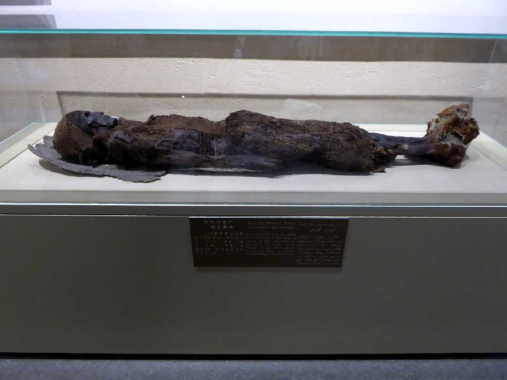
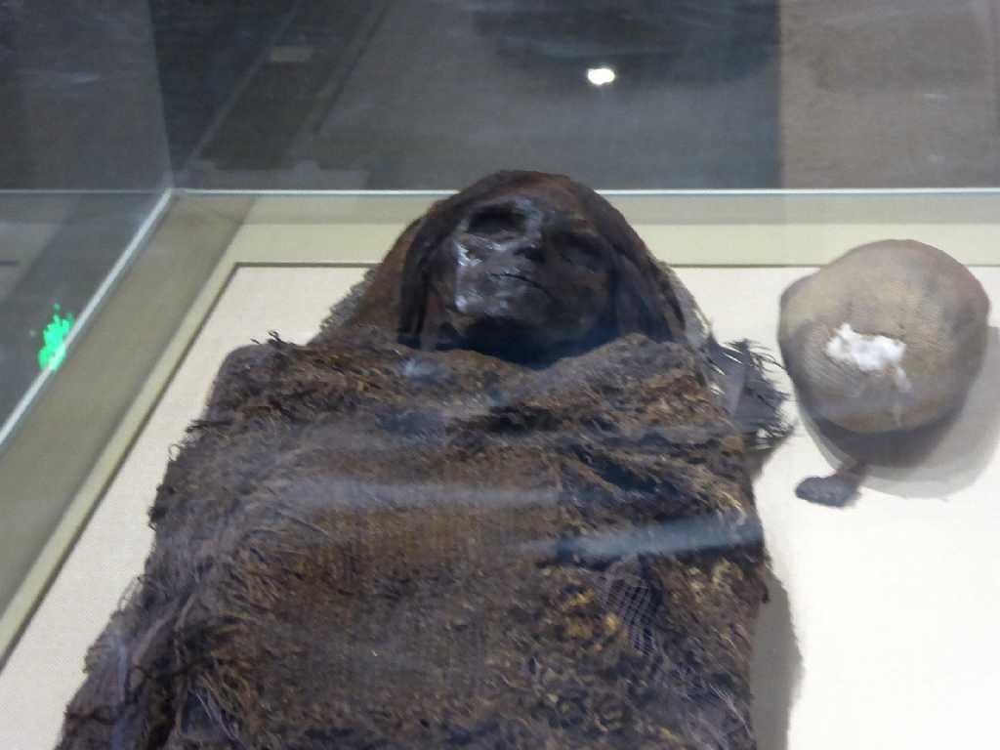
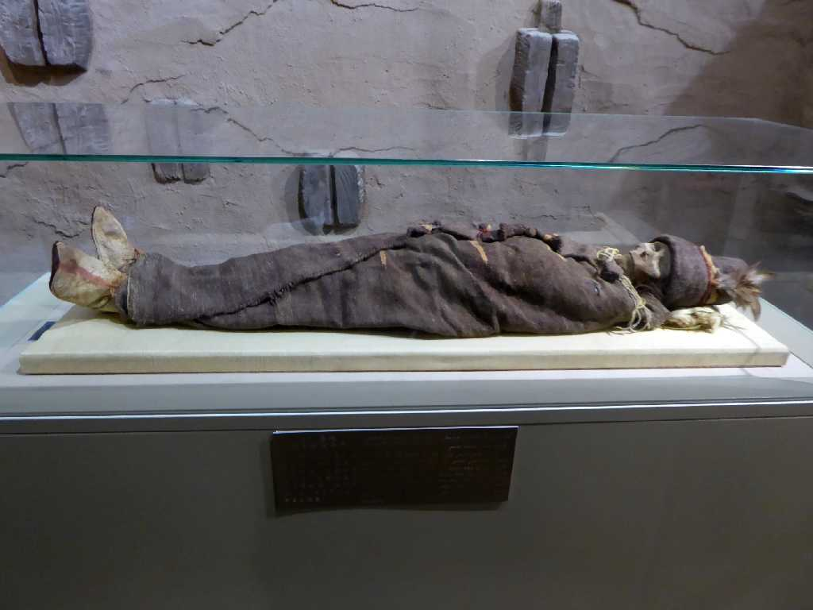
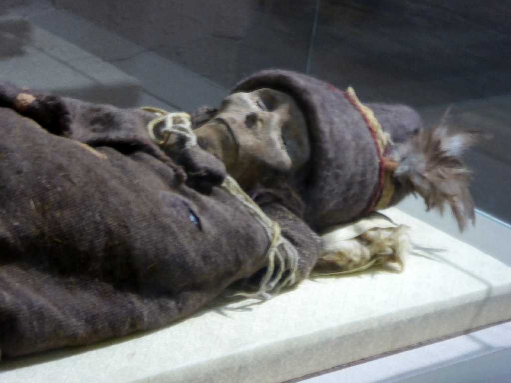

Loulan Beauty Urumqi Xinjiang 新疆 乌鲁木齐 楼兰美女
ウルムチの新疆ウイグル自治区博物館にあるミイラ 楼蘭の美女

Face Loulan Beauty Urumqi 楼兰美女
１９８０年に楼蘭遺跡で発見された紀元前１９世紀に埋葬されたと考えられている４０歳前後の女性ミイラ

Loulan Princess 楼兰公主
楼蘭の皇女

Face Loulan Princess 楼兰公主
タクラマカン砂漠周遊の旅は東端の酒泉の鎖陽城からシルクロード西域南道を通り西端のカラクリ湖を周り天山南路を通りここウルムチまで約６,０００ｋｍを走って終わる